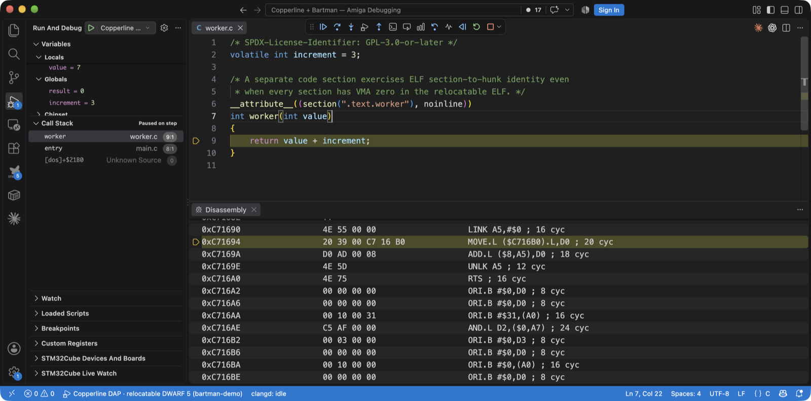
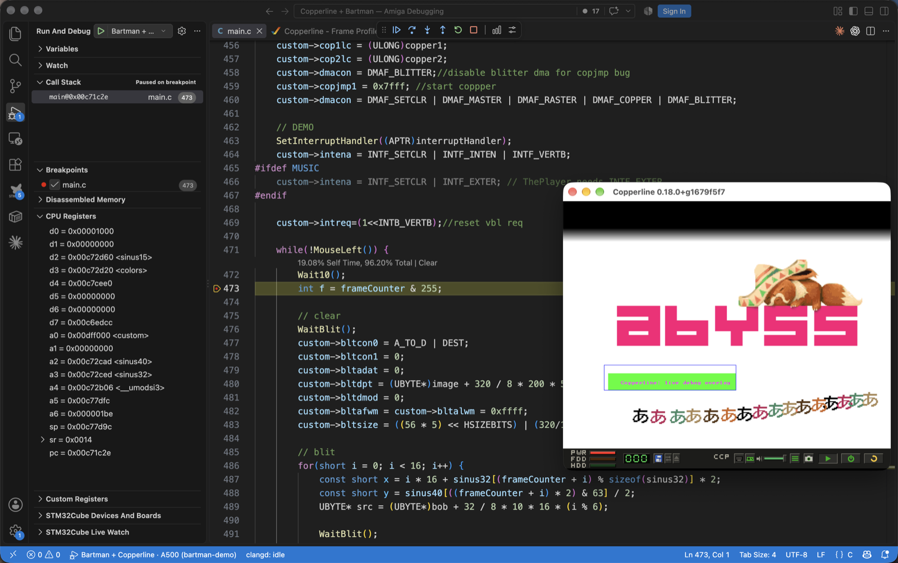
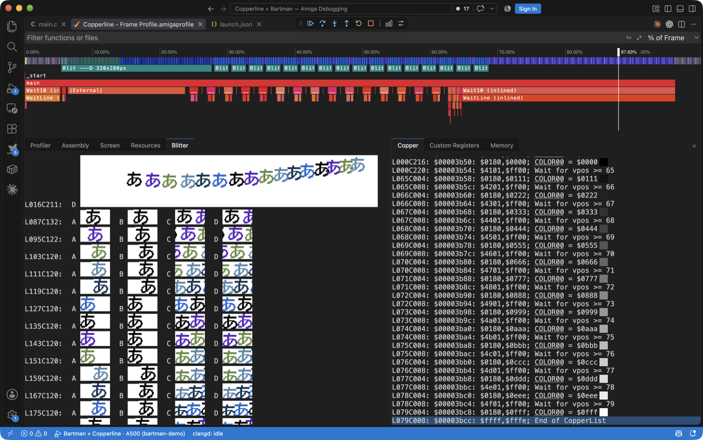
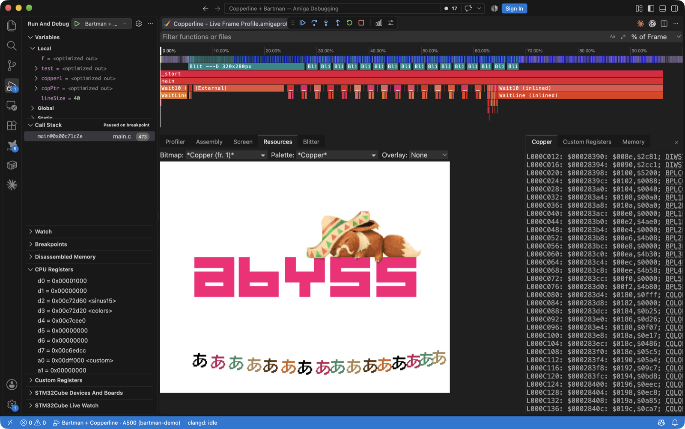
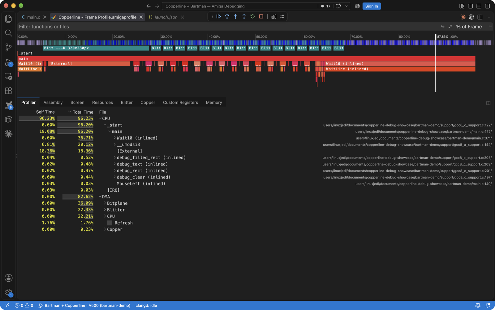

Copperline 0.19.0: Amiga debugging from VS Code, Bartman's profiler on Copperline, and two open ROMs
Copperline 0.19.0 is the developer release. An Amiga program can now be debugged at source level from Visual Studio Code - breakpoints, stepping, Step Back, variables, custom-chip registers and source-mapped CPU profiles - through a new Debug Adapter Protocol server, and Bartman's Amiga C/C++ extension runs on Copperline with its visual CPU/DMA, Copper, bitmap and blitter profiler fed by the emulator's own per-colour-clock bus captures.
Around that: an MCP server so AI coding agents can drive a live machine, a
WinUAE-compatible uaelib trap with KPrintF and on-screen debug
overlays, an HRTMon freezer cartridge, CPU chip-bus wait attribution and live
Kickstart symbols in the Frame Analyzer, warp boot, and WinUAE save-state
import. Away from the debugger: open-source replacements for the CD32 FMV
cartridge ROM and the A2091/A590 boot ROM, Simon Dick's emulator-native
copperhf.device hard-disk controller, uncapped integer scaling
with autocrop, --run on a bare Kickstart 1.3, and a bundled AROS
ROM refresh. As always, the compatibility fixes model the Amiga's chips
rather than individual titles.
Source-level debugging in VS Code
copperline-ctl --dap is a Debug Adapter Protocol server built on
the control protocol, and tools/vscode-copperline packages it as a
VS Code extension. A launch.json names the executable and the
machine; F5 boots the bundled AROS ROM or a Kickstart from 1.3 up, warp-boots
to the program and stops at main with the source open.

From there it works like debugging anything else in VS Code: source, function,
instruction, data and exception breakpoints with conditions the machine
evaluates itself (d0 == 5, [$DFF006] != 0); Step
Over, Into and Out by statement or instruction; Registers (FPU included),
Locals and Globals; hovers and watch expressions; Memory and Disassembly views
with per-instruction cycle counts and ROM addresses named live from the
running guest ([exec] AllocMem+$12). Two things are specific to
Copperline: Step Back and Reverse Continue
work, because the machine is deterministic and keeps a ring of snapshots; and
a Chipset scope plus a Custom Registers tree document every custom register's
bit fields and access rules, from a new reference covering all 237 of them.
Debug information comes from vasm's LINE hunks, the DWARF that
amiga-gcc 6.5 leaves in the executable, or an ELF sibling from Bartman's
m68k-amiga-elf-gcc, including relocatable multi-file builds whose
relocations the reader applies itself. The Profile button captures frames as a
source-mapped .cpuprofile with a [Bus wait] child
separating chip-DMA contention from CPU work. nvim-dap and any other DAP client
can use the same adapter. See the VS Code chapter
and the DAP reference.
Bartman's extension, running on Copperline
Bartman's Amiga C/C++ extension - compiler, patched GDB, source annotations and the visual profiler - only spoke to its own WinUAE build. A public fork adds a Copperline backend (proposed upstream as PR 307; the fork is pinned and documented, so nothing waits on the merge).

Copperline grew the other half: --gdb-gui attaches the GDB stub to
the interactive window, so the screen stays visible and the audio plays;
--gdb-dialect bartman speaks the patched GDB's wire contract
(hunk offsets, the return-from-ROM breakpoint, monitor reset,
DBG: output); monitor profile writes the extension's
profile format from Copperline's precise sampler and full bus trace; and a
windowed launch waits paused until GDB connects, because on the first attempt
the guest finished loading before the debugger arrived.

The result is Bartman's profiler on a cycle-driven machine. Capture a frame and
the timeline shows the CPU call stack against DMA and blitter activity; the
Resources view reconstructs the displayed bitmap from the recorded Copper
writes (or shows a bitmap the guest registered by name); the Blitter view
renders any channel of any blit from the exact DMA words it moved, honouring
shifts, masks, modulos and the latched BLTxDAT inputs; and the
Copper list traces back to the frame and beam position of each MOVE.

The walkthrough, with a reproducible install of the fork, is Bartman with Copperline.
Profiling and chip-bus tracing
None of the above needs VS Code. profile.start over the control
protocol writes one JSON record per committed frame: chip-bus ownership per
Agnus owner, blit records, the guest's idle clocks, and optionally the
per-colour-clock owner grid in vAmiga's DMA-debugger letter code and a
screenshot per frame. "samples": true records every retired
instruction with its PC and colour-clock cost, plus live call stacks from an
unwind table, and copperline-ctl profile-report converts a capture
to a Chrome .cpuprofile.

frame.slots and the bus event family expose a full
24-byte record per raster colour clock: register, DMA kind and subtype, size,
IPL, CIA E-clock phase, address, data, and a hardware-event mask (blitter
start and finish, Copper WAIT wake, DDF strobes, vertical blank, CIA IRQ pins,
STOP entry and wake). The Frame Analyzer's Beam tab gains a
CPU wait view (W) that attributes every colour
clock the 68000 lost to the DMA class that held the bus, with a per-line
stall gutter and the top stalled PCs. ROM addresses in call stacks,
disassembly and profiles are resolved from the running guest's library and
resident lists, so names follow SetFunction() patches and work on
any Kickstart or AROS revision.
uaelib, MCP, and a freezer cartridge
A WinUAE-compatible uaelib trap at $F0FF60 answers the calls
Bartman's template makes: warpmode() unpaces the window,
KPrintF lands on stdout and in the debugger console, the
debug_register_* markers feed a new Frame Analyzer Resources tab
with decoded bitmap previews and palette swatches, and the overlay commands
are drawn on the window without ever reaching a screenshot. It is 32 bytes of
real 68k code decoded on the bus; there is no A-line or TRAP hook.
copperline-ctl --mcp exposes every control-protocol method as a
Model Context Protocol tool - 95 of them, plus session launch and attach - so
Claude Code, Cursor or any MCP client can boot a machine, set breakpoints,
step, read memory and receive screenshots as images.
claude mcp add copperline -- copperline-ctl --mcp is the whole
setup.
[cartridge] model = "hrtmon" fits an Action Replay-style freezer
with HRTMon 2.39 built reproducibly from the upstream GPL source: a 1 MiB bank
at $A10000, a shadow of every custom and CIA register copied into
it on a freeze, and the freeze itself as a level-7 NMI through the current VBR
that the 68000 takes at the next instruction boundary whatever the SR mask.
Tools > Freeze in the window, --freeze-after
headless, x in the monitor to carry on.
Two open ROMs
Last release added the CD32 FMV cartridge but needed Commodore's cartridge ROM.
0.19.0 ships a clean-room GPL replacement: it installs
cd32mpeg.device, reads MPEG sectors through the host
cd.device and feeds the CL450 and L64111 ports, with no firmware
copied, plus a videocd.library and boot strap that cold-boot a
White Book Video CD into a track player under Kickstart. Under AROS the
matching driver merged upstream this cycle. Cannon Fodder's filmed intro plays
on both paths, and the CD32 profile now fits the cartridge by default
(fmv_rom = "" gives a stock machine).
The A2091 and A590 get a clean-room 64 KiB autoboot ROM: scsi.device
42.40 derived from the open A4091 software, an RDB automounter with Kickstart
1.3 support, and a WD33C93 transport that uses the board's DMAC for
even-aligned chip-side buffers and bounces through chip RAM otherwise. The
build also emits split U13/U12 EPROM halves for a real board.
copperhf.device
Simon Dick (@sidick)
built copperhf.device, Copperline's own hard-disk controller and
the analogue of WinUAE's uaehf.device: a Zorro II board with a
doorbell and completion-queue register block, an autoboot ROM whose RDB mounter
works from Kickstart 1.3 to AROS, the full trackdisk family (TD64, NSD,
HD_SCSICMD with autosense, disk-change interrupts), and a
completion time that is a pure function of emulated time, so host disk speed
never reaches the guest. [copperhf] unit0..unit6 take
RDB hardfiles, bare images, .hdz and host directories; the launcher
gains a Copperline HD page; and copperline-import-uae maps WinUAE's
uaeN drives onto it.
Scaling, autocrop, warp boot
A new WGSL scaler pass replaces the pixels crate's built-in draw, so
integer scaling is no longer capped at 4x on a 5K or 6K display. Under the
default TV pixel aspect it now presents the unresampled canvas with a separate
whole-number factor per axis chosen to approximate the glass's pixel shape.
[display] autocrop crops the window to the display window the
program actually sets up - the renderer's own per-line DIW bounds, never a
title list - with a latch that grows immediately and shrinks after half a
second of stability, and it works for DblPAL and Multiscan screens too. The
browser build gains both controls.
--warp-boot runs any configuration unpaced from power-on until its
disks have been idle for ten seconds, then re-paces with audio;
--warp-until warps to an emulated timestamp. Lee Hobson's
[emulation] auto_launch makes a saved default boot straight past
the launcher, and he moved the host data directory out of the hidden config
tree into Documents. --load-uss imports a WinUAE
.uss state as an approximate interchange for resident code, and
--run now works on a bare Kickstart 1.3 because the staged boot
volume carries its own small GPL shell commands.
Hardware accuracy fixes
- Floppy motor latch: every drive, DF0 included, clocks /MTR on
its own /SEL edge; DF0 was level-sensitive, which stopped a motor a loader
had just started. Alongside it the 68000 IPL recognition pipe keeps one
deadline per source and bounds an idle
STOPnap, pre-display sprite DMA is replayed at its own beam time, and a loader parked on DSKSYNC no longer costs a whole-revolution scan per idle slice (Spooky Town under Kickstart 1.3). - DSKBYTR and IPF density: DSKBYTR is framed by the read shifter's bit counter rather than the track's byte grid, WORDEQUAL is a one-cell level, and IPF density models for Copylock, Speedlock and Brierley tracks decode with their mastered cell timing (Lemmings' key-track check).
- Akiko: subcode frames with a regenerated Q position are delivered during CD audio play (Liberation's intro waits on them), and the TX DMA keeps draining the command ring while a lead-in dump streams, so a 39-track disc no longer laps it (Pinball Illusions).
- Agnus: a bitplane fetch run carried past the last display line is
cancelled with the vertical window, removing a phantom row the refreshed AROS
boot screen exposed; a new
ddfprobe-vspillgolden pins it. - 68030 and 68040 timing were recalibrated against a real A4000 with three CPU boards and a new bootable probe: the 68030 now runs on the MC68020UM tables and the 68040 gets a single-issue pipeline model, replacing a scaled-68000 approximation that over-billed plain 68040 execution about 2x.
- Toccata: the mixer no longer holds the last DAC sample forever after the codec stops (Simon Dick).
- Bundled AROS ROM refreshed to upstream master with the open
cd32mpeg.device, the CD32 chip-memory savings and CDXL presentation series, and a locally patched 8 KiB process-stack floor.
Compatibility notes
Save states from 0.18.0 do not load in 0.19.0. The state format moves from 70 to 79. Saves are now written atomically, so a failed save no longer destroys the previous snapshot.
Your host data moved to Documents, with no automatic migration.
Configs, save states, screenshots, recordings, NVRAM, gamepad calibrations and
the WHDLoad library now live in ~/Documents/Copperline/ (macOS,
Linux) or Documents\Copperline\ (Windows). Copy your old
~/.config/copperline or %APPDATA%\copperline there
once, or Copperline starts at factory settings.
Two defaults changed. The CD32 profile fits the open FMV cartridge
unless fmv_rom = "", and an A2091 with no named ROM loads the
bundled one instead of refusing to start. An explicit ROM path is honoured as
before. The uaelib trap is on by default ([emulation] uaelib = false
turns it off), and emulated 68030/68040 speed changed with the recalibration.
No configuration keys were removed or renamed.
Contributed this cycle
Simon Dick (@sidick)
built copperhf.device end to end and fixed the Toccata's stopped-codec
DC offset. Lee Hobson (@hobbo91)
added auto-launch and the Documents move. Bartman wrote the extension this
release leans on, and the AROS developers merged the open FMV driver upstream.
Get it
Pre-built packages for macOS, Linux, and Windows (including Windows on ARM) are on the GitHub release page, and the Homebrew tap has been updated. You can also run the emulator in your browser at copperline.dev/try.
Copperline is funded by its patrons, who pay for the hardware every timing model is measured against. If it is useful to you, consider supporting it on Patreon.
- Andrew Hutchings (LinuxJedi) · linuxjedi.co.uk